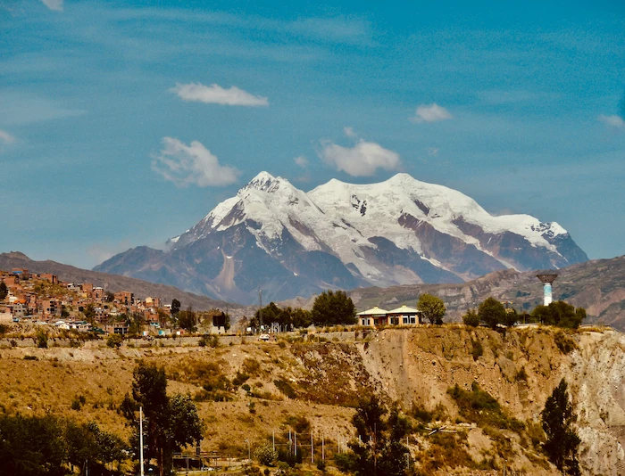

Data
Country: Bolivia
Elevation: 3,640 m
Population: 816,000
Department: La Paz
Languages: Spanish, Aymara
Time Zone: UTC -4
Currency: Boliviano
Weather

Temperature: 8 °C
Conditions: Sunny, Cloudy
Wind: 15 km/h
Wind Chill: